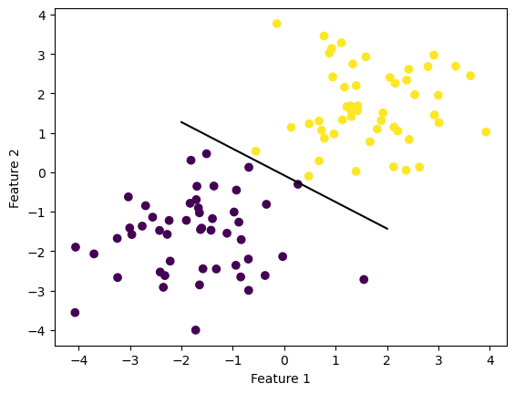

In order to implement the perceptron algorithm in python, I created a perceptron class. Within that class I defined the fit method:
fit(self, X, y, max_steps)
Before iterating through the algorithm, I first made an array \(\tilde{\mathbf{X}} = [\mathbf{X}, \mathbf{1}]\) and initialed the vector \(\tilde{\mathbf{w}}\) with random values from \(0-1\):
After initializing \(\tilde{\mathbf{X}}\) and \(\tilde{\mathbf{w}}\), I iterated between random vectors in \(\tilde{\mathbf{X}}\) and updated \(\tilde{\mathbf{w}}\) using the equation:
Using the make_blobs() fuction, I created two linearly seperable groups of data. I then created an instance of the perceptron class and called the fit method on the data. Plotting both the data and the hyperplane (line) that seperated the data makes it clear that this test resultued in a success:
import numpy as npimport pandas as pdimport seaborn as snsfrom matplotlib import pyplot as pltfrom perceptron import Perceptronfrom sklearn.datasets import make_blobs, make_circlesnp.random.seed(12345)X, y = make_blobs(n_samples =100, n_features =2, centers = [(-1.7, -1.7), (1.7, 1.7)])p = Perceptron()p.fit(X, y, max_steps =1000)def draw_line(w, x_min, x_max): x = np.linspace(x_min, x_max, 101) y =-(w[0]*x + w[2])/w[1] plt.plot(x, y, color ="black")fig = plt.scatter(X[:,0], X[:,1], c = y)fig = draw_line(p.w, -2, 2)xlab = plt.xlabel("Feature 1")ylab = plt.ylabel("Feature 2")

Looking at the last few accuracy scores we can also see that the perceptron algorithm converged and reached 100% accuracy.
This graph shows the full progression of the acuracy throughout all iterations of the algorithm. We can clealy see that the algorithm converged and it finished before reaching max_steps=1000.
Experiment 2 & 3: Perceptron Algorithm on Non-linearly Seperable Data
In experiment two, I used the make_blobs() function but put the centers of the blobs closer together so that they would have overlapping data. As seen in the figure below, the two sets of data are not linearly seperable. We can see that the line seperates the data to some extent but does not completely seperate the data because that would be impossible. This is the line achieved after 1000 iterations of the algorithm.
Below we also see that perfect accuracy is not acheived after 1000 iterations. Furthermore, the accuracy also does not consistantly improve with each iteration. It even drops from 97% to 94% in the last two iterations.
In experiment three I created another non linear data set using the make_circles() function. This results in a two sets of data in the shape of a circle, one encompassing the other. From this experiment we also see that it is impossible to seperate the two sets of data with a hyperplane.
I chose to include this experiment as well in order to highlight the downsides to using perceptrons to seperate data.
While there are cases in which non-linearly seperable data sets are still roughly seperable by a hyperplane (such as experiment 2) there are cases like the one below where a hyperplane would not even be helpful in predicting the labels of the data.
Below we see that the acuracy hovers around 50% and does not improve with each iteration. Because we used binary classifiers, a 50% accuracy rate means that this peceptron is just as good as guessing and is therefore not even helpful in classifying the data sets.
Eperiment 4: Perceptron Algorithm on 5-dimensional Data
In my final experiment, I ran the perceptron algorithm on data with 5 features instead of two. Unfortionally, such data is hard to represent visually so because of the dimensionality. I created the set using make_blobs() with 5 features instead of 2 and centers at (-1, -1, -1, -1, -1) and (1.7, 1.7, 1.7, 1.7, 1.7).
As shown below, this experiment proved sucessful since the algorithm converged finding a hyperplane that seperated the data with perfect accuracy. This also means our data generated using the make_blobs() function was linearly seperable.
Runtime Complexity of Single Iteration of the Perceptron Algorithm
In order to calculate the runtime complexity of the one iteration of the perceptron algorithm I must look at the equation used to update \(\tilde{\mathbf{w}}\):
Firstly, \(\tilde{\mathbf{w}}^{(t)}\) and \(\tilde{\mathbf{x}}_i\) are both \(p+1\) dimensional vectors, where \(p\) is the number of features.
By definition, the dot product of two \(n\)-dimensionsal vectors \(a\) and \(b\) is: \[a_1*b_1 + a_2*b_2 \space ... + \space a_n*b_n\]
Within this calculation, \(n\) multiplications are performed and \(n-1\) additions are performed. Therefore, when \(\langle \tilde{\mathbf{w}}^{(t)}, \tilde{\mathbf{x}}_i\rangle\) is calculated, \(p+1\) multiplications and \(p\) additions are performed.
Therefore, the complexity of performing the dot product of \(\tilde{\mathbf{w}}^{(t)}\) and \(\tilde{\mathbf{x}}_i\) is \(2p+1=O(p)\).
Furthermore, multiplying that dot product by \(\tilde{y}_i\), the \(<\) comparison, and the \(\mathbb{1}()\) function are all \(O(1)\).
Lastly, the scalar multiplication on \(\tilde{\mathbf{x}}_i\) requires \(p+1\) multilplications and is therefore \(O(p)\).
That means that the final runtime complexity of a single iteration of the perceptron algorithm is \(2*O(p) + 3*O(1) = O(p)\).
The runtime complexity of this single operation is therefore not dependent on the number of data points in the set but instead only on the number of features.